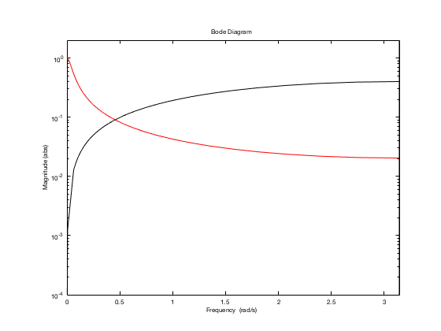
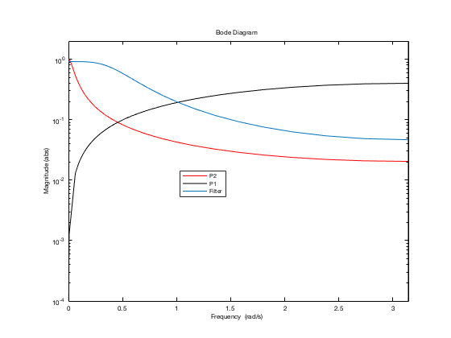
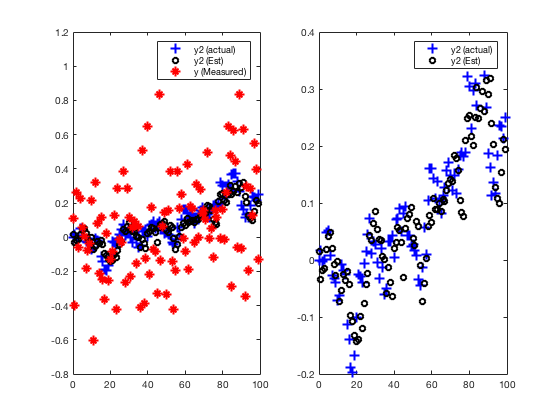
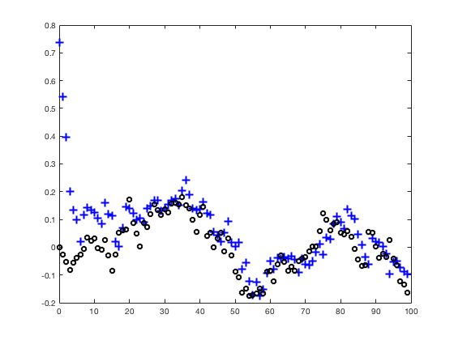

Contents
- ME C231B Assignment: Kalman Filtering (part 2)
- 1.c.ii
- 1.c.iv
- 2
- 3. Steady-State Behavior
- 4. Separating signal from noise
- 4.b
- Separating Signal from Noise
- Sample Time
- Create high-pass filter
- Create low-pass filter
- Bode plot of both
- Form overall system which adds the outputs
- Noise variance and initial condition variance
- Run several iterations to get the steady-state Kalman Gains
- Form Kalman filter with 3 outputs
- Form matrix to extract estimate of y2_{k|k}
- Bode plot of filter
- Single Simulation
- Get y1 and y2 (separate simulations) for later comparison
- Form Estimate of y2
- Plot
- 4.c
- 4.d
- Create plant
- Create/Declare variance of disturbance and initial condition
- Initialize KF states with appropriate values
- Create a specific initial condition and noise sequence
- Simulate the system/KF one step at a time
ME C231B Assignment: Kalman Filtering (part 2)
close all
1.c.ii
Amat = repmat(1,[1 1 20]); nX = size(Amat,1); Emat = repmat(0,[1 1 20]); Cmat = repmat(1,[1 1 20]); Fmat = repmat(1,[1 1 20]); sX = 1000; sW = 1; m0=2; for k=1:6 [LkBatch,VkBatch,eVar] = ... batchKF(Amat,Emat,Cmat,Fmat,sX,sW,k); fprintf('Horizon number is %d',k) LkBatch(end-2*nX+1:end,:) VkBatch(end-2*nX+1:end) end
Horizon number is 1
ans =
0.9990
0.9990
ans =
1.0e-03 *
0.9990
0.9990
Horizon number is 2
ans =
0.4998 0.4998
0.4998 0.4998
ans =
1.0e-03 *
0.4998
0.4998
Horizon number is 3
ans =
0.3332 0.3332 0.3332
0.3332 0.3332 0.3332
ans =
1.0e-03 *
0.3332
0.3332
Horizon number is 4
ans =
0.2499 0.2499 0.2499 0.2499
0.2499 0.2499 0.2499 0.2499
ans =
1.0e-03 *
0.2499
0.2499
Horizon number is 5
ans =
0.2000 0.2000 0.2000 0.2000 0.2000
0.2000 0.2000 0.2000 0.2000 0.2000
ans =
1.0e-03 *
0.2000
0.2000
Horizon number is 6
ans =
0.1666 0.1666 0.1666 0.1666 0.1666 0.1666
0.1666 0.1666 0.1666 0.1666 0.1666 0.1666
ans =
1.0e-03 *
0.1666
0.1666
1.c.iv
Amat = repmat(1,[1 1 20]); nX = size(Amat,1); Emat = repmat(0,[1 1 20]); Cmat = repmat(1,[1 1 20]); Fmat = repmat(1,[1 1 20]); sX = 0.1; sW = 5; m0=4; for k=1:6 [LkBatch,VkBatch,eVar] = ... batchKF(Amat,Emat,Cmat,Fmat,sX,sW,k); fprintf('Horizon number is %d',k) LkBatch(end-2*nX+1:end,:) VkBatch(end-2*nX+1:end) end
Horizon number is 1
ans =
0.0196
0.0196
ans =
0.9804
0.9804
Horizon number is 2
ans =
0.0192 0.0192
0.0192 0.0192
ans =
0.9615
0.9615
Horizon number is 3
ans =
0.0189 0.0189 0.0189
0.0189 0.0189 0.0189
ans =
0.9434
0.9434
Horizon number is 4
ans =
0.0185 0.0185 0.0185 0.0185
0.0185 0.0185 0.0185 0.0185
ans =
0.9259
0.9259
Horizon number is 5
ans =
0.0182 0.0182 0.0182 0.0182 0.0182
0.0182 0.0182 0.0182 0.0182 0.0182
ans =
0.9091
0.9091
Horizon number is 6
ans =
0.0179 0.0179 0.0179 0.0179 0.0179 0.0179
0.0179 0.0179 0.0179 0.0179 0.0179 0.0179
ans =
0.8929
0.8929
2
Please review code in KF231B.m
3. Steady-State Behavior
% We assume those following are the process state-space matrices. A = [2,-1;-3,4]; B = [1;1]; E = [2;1]; C = [2,1]; F = 3; N = 10; % Horizontal Number % Initial Conditions xkk1 = 0; % Average values Sxkk1 = 1; % Variance of the initial conditions Swk = 1; % Variance of the time-invariant disturbence uk = 1; yk = 1; for k = 1:10 [xk1k,Sxk1k,xkk,Sxkk,Sykk1,Lk,Hk,Gk,wkk] = KF231B(xkk1,Sxkk1,A,B,C,E,F,Swk,uk,yk); xkk1 = xk1k; Sxkk1 = Sxk1k; fprintf('Step %d',k); disp(Lk); disp(Hk); end
Step 1 0.6429
0.0714
0.1429
0.0714
Step 2 0.0539
1.5809
0.0456
0.3859
Step 3 42.8388
-110.0164
7.9868
-22.1086
Step 4 -7.6380
22.2456
-1.6554
4.3206
Step 5 -6.8907
20.2265
-1.4850
3.9405
Step 6 -6.9478
20.3908
-1.5026
3.9676
Step 7 -6.9649
20.4382
-1.5071
3.9761
Step 8 -6.9766
20.4709
-1.5102
3.9819
Step 9 -6.9822
20.4867
-1.5117
3.9846
Step 10 -6.9852
20.4950
-1.5125
3.9861
4. Separating signal from noise
4.b
Separating Signal from Noise
ME C231B, UC Berkeley, Spring 2018
Sample Time
For this discrete-time example, set TS=-1. In Matlab, this just means an unspecified sampling time, totally within the context of pure discrete-time systems.
TS = -1;
Create high-pass filter
P1 = 0.4*tf([.5 -.5],[1 0],TS); [A1,E1,C1,F1] = ssdata(P1); nX1 = size(A1,1); % will be 1 nW1 = size(E1,2); % will be 1
Create low-pass filter
P2 = tf(.04,[1 -.96],TS); [A2,E2,C2,F2] = ssdata(P2); nX2 = size(A2,1); % will be 1 nW2 = size(E2,2); % will be 1
Bode plot of both
bOpt = bodeoptions; bOpt.PhaseVisible = 'off'; bOpt.MagUnits = 'abs'; bOpt.MagScale = 'log'; bOpt.FreqScale = 'linear'; bOpt.Xlim = [0 pi]; bOpt.Ylim = [1e-4 2]; bodeplot(P2,'r',P1,'k',bOpt)
Form overall system which adds the outputs
A = blkdiag(A1,A2); E = blkdiag(E1,E2); C = [C1 C2]; F = [F1 F2]; nX = size(A,1); nY = size(C,1); nW = size(E,2);
Noise variance and initial condition variance
Keep it simple, and make everything Identity (appropriate dimension)
SigW = eye(nW); Sxkk1 = eye(nX);
Run several iterations to get the steady-state Kalman Gains
nIter = 40; for i=1:nIter Swk = SigW; [~,Sxk1k,~,Sxkk,Sykk1,Lk,Hk,Gk,~] = ... KF231B([],Sxkk1,A,[],C,E,F,Swk,[],[]); Sxkk1 = Sxk1k; end
Form Kalman filter with 3 outputs
AKF = A-Lk*C; BKF = Lk; CKF = [eye(nX);eye(nX)-Hk*C;-Gk*C]; DKF = [zeros(nX,nY);Hk;Gk]; SSKF = ss(AKF,BKF,CKF,DKF,TS);
Form matrix to extract estimate of y2_{k|k}
We need [0 C2]*xhat_{k|k} + [0 F2]*what_{k|k}. Everything is scalar dimension, but we can form this matrix properly so that the example would work on other systems too.
M = [zeros(nY,nX) zeros(nY,nX1) C2 zeros(nY,nW1) F2];
Bode plot of filter
It makes sense that the filter will try to "pass" some low frequencies, to preserve y2, but will cutoff high-frequencies to reject y1. The "pass" region should extend over the region where P2 has modest gain. The Bode magnitude plot confirms this
bodeplot(P2,'r',P1,'k',M*SSKF,bOpt) legend('P2','P1','Filter');
Single Simulation
Create a w sequence consistent with variance assumption
wSeq = randn(100,2);
Get y1 and y2 (separate simulations) for later comparison
y1 = lsim(P1,wSeq(:,1)); y2 = lsim(P2,wSeq(:,2)); y = y1 + y2;
Form the cascade (system output goes directly to Kalman Filter), and simulate, obtaining the outputs of Kalman Filter
Est = lsim(SSKF*ss(A,E,C,F,TS),wSeq);
Form Estimate of y2
Est matrix is 100-by-6, so use transpose correctly to do reconstruction as a matrix multiply
y2Est = (M*Est')';
Plot
subplot(1,2,1); plot(0:99,y2,'b+',0:99,y2Est,'ko',0:99,y,'r*'); legend('y2 (actual)','y2 (Est)','y (Measured)'); subplot(1,2,2); plot(0:99,y2,'b+',0:99,y2Est,'ko'); legend('y2 (actual)','y2 (Est)');
4.c
4.d
Create plant
T = 100; % sequence length, data runs from 0:(T-1)
nX = 2;
nW = 2;
nY = 1;
arrayA = repmat([0,0;0,0.96],[1 1 T]);
arrayE = repmat([0.5,0;0,0.25],[1 1 T]);
arrayC = repmat([-0.4,0.16],[1 1 T]);
arrayF = repmat([0.2,0],[1 1 T]);
Create/Declare variance of disturbance and initial condition
arraySW = repmat([1,0;0,1], [1,1,T]); Sx0 = eye(nX); m0 = 4;
Initialize KF states with appropriate values
Sxii1 = Sx0; xii1 = m0;
Create a specific initial condition and noise sequence
Under ideal circumstances, this should be consistent with the statistical assumptions made in the previous code cell. When studying robustness, namely how the filter performance degrades as assumptions are not met, it may be useful to create an initial condition and noise sequence which is not consistent with the assumptions
wSeq = randn(2,100); x0 = 1;
Simulate the system/KF one step at a time
emptyB = []; % this template is for no control signal emptyu = []; % this template is for no control signal y = zeros(nY,T); xSeq = zeros(nX,T); xSeq(:,1) = x0; xEii1 = zeros(nX,T); xEii1(:,1) = m0; xEii = zeros(nX,T); yEii = zeros(nY,T); y2Eii = zeros(1,T); for i=0:T-1 iMatlab = i+1; Ai = arrayA(:,:,iMatlab); Ei = arrayE(:,:,iMatlab); Ci = arrayC(:,:,iMatlab); Fi = arrayF(:,:,iMatlab); Swi = arraySW(:,:,iMatlab); wi = wSeq(:,iMatlab); xi = xSeq(:,iMatlab); % Get y(i) from system model, using x(i) and w(i) y(:,iMatlab) = Ci*xi + Fi*wi; % Get estimates of x(i+1|i) using y(i) from KF [xi1i,Sxi1i,xii,Sxii,Syii1,Li,Hi,Gi,wii] = KF231B(xEii1(:,iMatlab),Sxii1,... Ai,emptyB,Ci,Ei,Fi,Swi,emptyu,y(:,iMatlab)); xEii(:,iMatlab) = xii; xEii1(:,iMatlab+1) = xi1i; % Get x(i+1) from system model, using x(i) and w(i) xSeq(:,iMatlab+1) = Ai*xi + Ei*wi; % Shift the error-variance estimate so that when loop-index i advances, % the initial condition for this variance is correct. Sxii1 = Sxi1i; yEii(:,iMatlab) = Ci*xii; y2Eii(iMatlab) = C2*xii(2) + F2*wii(2); end y2 = lsim(P2,wSeq(2,:)); figure plot(0:99,y2Eii,'b+',0:99,y2,'ko');